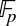

Chapter 4. Keys, Addresses
You may have heard that bitcoin is based on cryptography, which is a branch of mathematics used extensively in computer security. Cryptography means “secret writing” in Greek, but the science of cryptography encompasses more than just secret writing, which is referred to as encryption. Cryptography can also be used to prove knowledge of a secret without revealing that secret (digital signature), or prove the authenticity of data (digital fingerprint). These types of cryptographic proofs are the mathematical tools critical to bitcoin and used extensively in bitcoin applications. Ironically, encryption is not an important part of bitcoin, as its communications and transaction data are not encrypted and do not need to be encrypted to protect the funds. In this chapter we will introduce some of the cryptography used in bitcoin to control ownership of funds, in the form of keys, addresses, and wallets.
Introduction
Ownership of bitcoin is established through digital keys, bitcoin addresses, and digital signatures. The digital keys are not actually stored in the network, but are instead created and stored by users in a file, or simple database, called a wallet. The digital keys in a user’s wallet are completely independent of the bitcoin protocol and can be generated and managed by the user’s wallet software without reference to the blockchain or access to the internet. Keys enable many of the interesting properties of bitcoin, including decentralized trust and control, ownership attestation, and the cryptographic-proof security model.
Most bitcoin transactions requires a valid digital signature to be included in the blockchain, which can only be generated with a secret key; therefore, anyone with a copy of that key has control of the bitcoin. The digital signature used to spend funds is also referred to as a witness, a term used in cryptography. The witness data in a bitcoin transaction testifies to the true ownership of the funds being spent.
Keys come in pairs consisting of a private (secret) key and a public key. Think of the public key as similar to a bank account number and the private key as similar to the secret PIN, or signature on a check, that provides control over the account. These digital keys are very rarely seen by the users of bitcoin. For the most part, they are stored inside the wallet file and managed by the bitcoin wallet software.
In the payment portion of a bitcoin transaction, the recipient’s public key is represented by its digital fingerprint, called a bitcoin address, which is used in the same way as the beneficiary name on a check (i.e., “Pay to the order of”). In most cases, a bitcoin address is generated from and corresponds to a public key. However, not all bitcoin addresses represent public keys; they can also represent other beneficiaries such as scripts, as we will see later in this chapter. This way, bitcoin addresses abstract the recipient of funds, making transaction destinations flexible, similar to paper checks: a single payment instrument that can be used to pay into people’s accounts, pay into company accounts, pay for bills, or pay to cash. The bitcoin address is the only representation of the keys that users will routinely see, because this is the part they need to share with the world.
First, we will introduce cryptography and explain the mathematics used in bitcoin. Next, we will look at how keys are generated, stored, and managed. We will review the various encoding formats used to represent private and public keys, addresses, and script addresses. Finally, we will look at advanced use of keys and addresses: vanity, multisignature, and script addresses and paper wallets.
Public Key Cryptography and Cryptocurrency
Public key cryptography was invented in the 1970s and is a mathematical foundation for computer and information security.
Since the invention of public key cryptography, several suitable mathematical functions, such as prime number exponentiation and elliptic curve multiplication, have been discovered. These mathematical functions are practically irreversible, meaning that they are easy to calculate in one direction and infeasible to calculate in the opposite direction. Based on these mathematical functions, cryptography enables the creation of digital secrets and unforgeable digital signatures. Bitcoin uses elliptic curve multiplication as the basis for its cryptography.
In bitcoin, we use public key cryptography to create a key pair that controls access to bitcoin. The key pair consists of a private key and—derived from it—a unique public key. The public key is used to receive funds, and the private key is used to sign transactions to spend the funds.
There is a mathematical relationship between the public and the private key that allows the private key to be used to generate signatures on messages. This signature can be validated against the public key without revealing the private key.
When spending bitcoin, the current bitcoin owner presents her public key and a signature (different each time, but created from the same private key) in a transaction to spend those bitcoin. Through the presentation of the public key and signature, everyone in the bitcoin network can verify and accept the transaction as valid, confirming that the person transferring the bitcoin owned them at the time of the transfer.
Private and Public Keys
A bitcoin wallet contains a collection of key pairs, each consisting of a private key and a public key. The private key (k) is a number, usually picked at random. From the private key, we use elliptic curve multiplication, a one-way cryptographic function, to generate a public key (K). From the public key (K), we use a one-way cryptographic hash function to generate a bitcoin address (A). In this section, we will start with generating the private key, look at the elliptic curve math that is used to turn that into a public key, and finally, generate a bitcoin address from the public key. The relationship between private key, public key, and bitcoin address is shown in Figure 4-1.

Figure 4-1. Private key, public key, and bitcoin address
Private Keys
A private key is simply a number, picked at random. Ownership and control over the private key is the root of user control over all funds associated with the corresponding bitcoin address. The private key is used to create signatures that are required to spend bitcoin by proving ownership of funds used in a transaction. The private key must remain secret at all times, because revealing it to third parties is equivalent to giving them control over the bitcoin secured by that key. The private key must also be backed up and protected from accidental loss, because if it’s lost it cannot be recovered and the funds secured by it are forever lost, too.
Tip
The bitcoin private key is just a number. You can pick your private keys randomly using just a coin, pencil, and paper: toss a coin 256 times and you have the binary digits of a random private key you can use in a bitcoin wallet. The public key can then be generated from the private key.
Generating a private key from a random number
The first and most important step in generating keys is to find a secure source of entropy, or randomness. Creating a bitcoin key is essentially the same as “Pick a number between 1 and 2256.” The exact method you use to pick that number does not matter as long as it is not predictable or repeatable. Bitcoin software uses the underlying operating system’s random number generators to produce 256 bits of entropy (randomness). Usually, the OS random number generator is initialized by a human source of randomness, which is why you may be asked to wiggle your mouse around for a few seconds.
More precisely, the private key can be any number between 1 and n - 1, where n is a constant (n = 1.158 * 1077, slightly less than 2256) defined as the order of the elliptic curve used in bitcoin (see “Elliptic Curve Cryptography Explained”). To create such a key, we randomly pick a 256-bit number and check that it is less than n - 1. In programming terms, this is usually achieved by feeding a larger string of random bits, collected from a cryptographically secure source of randomness, into the SHA256 hash algorithm, which will conveniently produce a 256-bit number. If the result is less than n - 1, we have a suitable private key. Otherwise, we simply try again with another random number.
Warning
Do not write your own code to create a random number or use a “simple” random number generator offered by your programming language. Use a cryptographically secure pseudorandom number generator (CSPRNG) with a seed from a source of sufficient entropy. Study the documentation of the random number generator library you choose to make sure it is cryptographically secure. Correct implementation of the CSPRNG is critical to the security of the keys.
The following is a randomly generated private key (k) shown in hexadecimal format (256 bits shown as 64 hexadecimal digits, each 4 bits):
1E99423A4ED27608A15A2616A2B0E9E52CED330AC530EDCC32C8FFC6A526AEDD
Tip
The size of bitcoin’s private key space, (2256) is an unfathomably large number. It is approximately 1077 in decimal. For comparison, the visible universe is estimated to contain 1080 atoms.
To generate a new key with the Bitcoin Core client (see Chapter 3), use the getnewaddress command. For security reasons it displays the public key only, not the private key. To ask bitcoind to expose the private key, use the dumpprivkey command. The dumpprivkey command shows the private key in a Base58 checksum-encoded format called the Wallet Import Format (WIF), which we will examine in more detail in “Private key formats”. Here’s an example of generating and displaying a private key using these two commands:
$ bitcoin-cli getnewaddress 1J7mdg5rbQyUHENYdx39WVWK7fsLpEoXZy $ bitcoin-cli dumpprivkey 1J7mdg5rbQyUHENYdx39WVWK7fsLpEoXZy KxFC1jmwwCoACiCAWZ3eXa96mBM6tb3TYzGmf6YwgdGWZgawvrtJ
The dumpprivkey command opens the wallet and extracts the private key that was generated by the getnewaddress command. It is not possible for bitcoind to know the private key from the public key unless they are both stored in the wallet.
Tip
The dumpprivkey command does not generate a private key from a public key, as this is impossible. The command simply reveals the private key that is already known to the wallet and which was generated by the getnewaddress command.
You can also use the Bitcoin Explorer command-line tool (see Appendix G) to generate and display private keys with the commands seed, ec-new, and ec-to-wif:
$ bx seed | bx ec-new | bx ec-to-wif 5J3mBbAH58CpQ3Y5RNJpUKPE62SQ5tfcvU2JpbnkeyhfsYB1Jcn
Public Keys
The public key is calculated from the private key using elliptic curve multiplication, which is irreversible: K = k * G, where k is the private key, G is a constant point called the generator point, and K is the resulting public key. The reverse operation, known as “finding the discrete logarithm”—calculating k if you know K—is as difficult as trying all possible values of k, i.e., a brute-force search. Before we demonstrate how to generate a public key from a private key, let’s look at elliptic curve cryptography in a bit more detail.
Tip
Elliptic curve multiplication is a type of function that cryptographers call a “trap door” function: it is easy to do in one direction (multiplication) and impossible to do in the reverse direction (division). The owner of the private key can easily create the public key and then share it with the world knowing that no one can reverse the function and calculate the private key from the public key. This mathematical trick becomes the basis for unforgeable and secure digital signatures that prove ownership of bitcoin funds.
Elliptic Curve Cryptography Explained
Elliptic curve cryptography is a type of asymmetric or public key cryptography based on the discrete logarithm problem as expressed by addition and multiplication on the points of an elliptic curve.
Figure 4-2 is an example of an elliptic curve, similar to that used by bitcoin.

Figure 4-2. An elliptic curve
Bitcoin uses a specific elliptic curve and set of mathematical constants, as defined in a standard called secp256k1, established by the National Institute of Standards and Technology (NIST). The secp256k1 curve is defined by the following function, which produces an elliptic curve:
or
The mod p (modulo prime number p) indicates that this curve is over a finite field of prime order p, also written as , where p = 2256 – 232 – 29 – 28 – 27 – 26 – 24 – 1, a very large prime number.
Because this curve is defined over a finite field of prime order instead of over the real numbers, it looks like a pattern of dots scattered in two dimensions, which makes it difficult to visualize. However, the math is identical to that of an elliptic curve over real numbers. As an example, Figure 4-3 shows the same elliptic curve over a much smaller finite field of prime order 17, showing a pattern of dots on a grid. The secp256k1 bitcoin elliptic curve can be thought of as a much more complex pattern of dots on a unfathomably large grid.
Figure 4-3. Elliptic curve cryptography: visualizing an elliptic curve over F(p), with p=17
So, for example, the following is a point P with coordinates (x,y) that is a point on the secp256k1 curve:
P = (55066263022277343669578718895168534326250603453777594175500187360389116729240, 32670510020758816978083085130507043184471273380659243275938904335757337482424)
Example 4-1 shows how you can check this yourself using Python:
Example 4-1. Using Python to confirm that this point is on the elliptic curve
Python 3.4.0 (default, Mar 30 2014, 19:23:13)[GCC 4.2.1 Compatible Apple LLVM 5.1 (clang-503.0.38)] on darwinType "help", "copyright", "credits" or "license" for more information.>>>p=115792089237316195423570985008687907853269984665640564039457584007908834671663>>>x=55066263022277343669578718895168534326250603453777594175500187360389116729240>>>y=32670510020758816978083085130507043184471273380659243275938904335757337482424>>>(x**3+7-y**2)%p0
In elliptic curve math, there is a point called the “point at infinity,” which roughly corresponds to the role of zero in addition. On computers, it’s sometimes represented by x = y = 0 (which doesn’t satisfy the elliptic curve equation, but it’s an easy separate case that can be checked).
There is also a + operator, called “addition,” which has some properties similar to the traditional addition of real numbers that gradeschool children learn. Given two points P1 and P2 on the elliptic curve, there is a third point P3 = P1 + P2, also on the elliptic curve.
Geometrically, this third point P3 is calculated by drawing a line between P1 and P2. This line will intersect the elliptic curve in exactly one additional place. Call this point P3' = (x, y). Then reflect in the x-axis to get P3 = (x, –y).
There are a couple of special cases that explain the need for the “point at infinity.”
If P1 and P2 are the same point, the line “between” P1 and P2 should extend to be the tangent on the curve at this point P1. This tangent will intersect the curve in exactly one new point. You can use techniques from calculus to determine the slope of the tangent line. These techniques curiously work, even though we are restricting our interest to points on the curve with two integer coordinates!
In some cases (i.e., if P1 and P2 have the same x values but different y values), the tangent line will be exactly vertical, in which case P3 = “point at infinity.”
If P1 is the “point at infinity,” then P1 + P2 = P2. Similarly, if P2 is the point at infinity, then P1 + P2 = P1. This shows how the point at infinity plays the role of zero.
It turns out that + is associative, which means that (A + B) + C = A + (B + C). That means we can write A + B + C without parentheses and without ambiguity.
Now that we have defined addition, we can define multiplication in the standard way that extends addition. For a point P on the elliptic curve, if k is a whole number, then kP = P + P + P + … + P (k times). Note that k is sometimes confusingly called an “exponent” in this case.
Generating a Public Key
Starting with a private key in the form of a randomly generated number k, we multiply it by a predetermined point on the curve called the generator point G to produce another point somewhere else on the curve, which is the corresponding public key K. The generator point is specified as part of the secp256k1 standard and is always the same for all keys in bitcoin:

where k is the private key, G is the generator point, and K is the resulting public key, a point on the curve. Because the generator point is always the same for all bitcoin users, a private key k multiplied with G will always result in the same public key K. The relationship between k and K is fixed, but can only be calculated in one direction, from k to K. That’s why a bitcoin address (derived from K) can be shared with anyone and does not reveal the user’s private key (k).
Tip
A private key can be converted into a public key, but a public key cannot be converted back into a private key because the math only works one way.
Implementing the elliptic curve multiplication, we take the private key k generated previously and multiply it with the generator point G to find the public key K:
K = 1E99423A4ED27608A15A2616A2B0E9E52CED330AC530EDCC32C8FFC6A526AEDD * G
Public key K is defined as a point K = (x,y):
K = (x, y) where, x = F028892BAD7ED57D2FB57BF33081D5CFCF6F9ED3D3D7F159C2E2FFF579DC341A y = 07CF33DA18BD734C600B96A72BBC4749D5141C90EC8AC328AE52DDFE2E505BDB
To visualize multiplication of a point with an integer, we will use the simpler elliptic curve over real numbers—remember, the math is the same. Our goal is to find the multiple kG of the generator point G, which is the same as adding G to itself, k times in a row. In elliptic curves, adding a point to itself is the equivalent of drawing a tangent line on the point and finding where it intersects the curve again, then reflecting that point on the x-axis.
Figure 4-4 shows the process for deriving G, 2G, 4G, as a geometric operation on the curve.
Tip
Most bitcoin implementations use the OpenSSL cryptographic library to do the elliptic curve math. For example, to derive the public key, the function EC_POINT_mul() is used.

Figure 4-4. Elliptic curve cryptography: visualizing the multiplication of a point G by an integer k on an elliptic curve
Bitcoin Addresses
A bitcoin address is a string of digits and characters that can be shared with anyone who wants to send you money. Addresses produced from public keys consist of a string of numbers and letters, beginning with the digit “1.” Here’s an example of a bitcoin address:
1J7mdg5rbQyUHENYdx39WVWK7fsLpEoXZy
The bitcoin address is what appears most commonly in a transaction as the “recipient” of the funds. If we compare a bitcoin transaction to a paper check, the bitcoin address is the beneficiary, which is what we write on the line after “Pay to the order of.” On a paper check, that beneficiary can sometimes be the name of a bank account holder, but can also include corporations, institutions, or even cash. Because paper checks do not need to specify an account, but rather use an abstract name as the recipient of funds, they are very flexible payment instruments. Bitcoin transactions use a similar abstraction, the bitcoin address, to make them very flexible. A bitcoin address can represent the owner of a private/public key pair, or it can represent something else, such as a payment script, as we will see in “Pay-to-Script-Hash (P2SH)”. For now, let’s examine the simple case, a bitcoin address that represents, and is derived from, a public key.
The bitcoin address is derived from the public key through the use of one-way cryptographic hashing. A “hashing algorithm” or simply “hash algorithm” is a one-way function that produces a fingerprint or “hash” of an arbitrary-sized input. Cryptographic hash functions are used extensively in bitcoin: in bitcoin addresses, in script addresses, and in the mining Proof-of-Work algorithm. The algorithms used to make a bitcoin address from a public key are the Secure Hash Algorithm (SHA) and the RACE Integrity Primitives Evaluation Message Digest (RIPEMD), specifically SHA256 and RIPEMD160.
Starting with the public key K, we compute the SHA256 hash and then compute the RIPEMD160 hash of the result, producing a 160-bit (20-byte) number:
where K is the public key and A is the resulting bitcoin address.
Tip
A bitcoin address is not the same as a public key. Bitcoin addresses are derived from a public key using a one-way function.
Bitcoin addresses are almost always encoded as “Base58Check” (see “Base58 and Base58Check Encoding”), which uses 58 characters (a Base58 number system) and a checksum to help human readability, avoid ambiguity, and protect against errors in address transcription and entry. Base58Check is also used in many other ways in bitcoin, whenever there is a need for a user to read and correctly transcribe a number, such as a bitcoin address, a private key, an encrypted key, or a script hash. In the next section we will examine the mechanics of Base58Check encoding and decoding and the resulting representations. Figure 4-5 illustrates the conversion of a public key into a bitcoin address.

Figure 4-5. Public key to bitcoin address: conversion of a public key into a bitcoin address
Base58 and Base58Check Encoding
In order to represent long numbers in a compact way, using fewer symbols, many computer systems use mixed-alphanumeric representations with a base (or radix) higher than 10. For example, whereas the traditional decimal system uses the 10 numerals 0 through 9, the hexadecimal system uses 16, with the letters A through F as the six additional symbols. A number represented in hexadecimal format is shorter than the equivalent decimal representation. Even more compact, Base64 representation uses 26 lowercase letters, 26 capital letters, 10 numerals, and 2 more characters such as “+” and “/” to transmit binary data over text-based media such as email. Base64 is most commonly used to add binary attachments to email. Base58 is a text-based binary-encoding format developed for use in bitcoin and used in many other cryptocurrencies. It offers a balance between compact representation, readability, and error detection and prevention. Base58 is a subset of Base64, using upper- and lowercase letters and numbers, but omitting some characters that are frequently mistaken for one another and can appear identical when displayed in certain fonts. Specifically, Base58 is Base64 without the 0 (number zero), O (capital o), l (lower L), I (capital i), and the symbols “+” and “/”. Or, more simply, it is a set of lowercase and capital letters and numbers without the four (0, O, l, I) just mentioned. Example 4-2 shows the full Base58 alphabet.
Example 4-2. Bitcoin’s Base58 alphabet
123456789ABCDEFGHJKLMNPQRSTUVWXYZabcdefghijkmnopqrstuvwxyz
To add extra security against typos or transcription errors, Base58Check is a Base58 encoding format, frequently used in bitcoin, which has a built-in error-checking code. The checksum is an additional four bytes added to the end of the data that is being encoded. The checksum is derived from the hash of the encoded data and can therefore be used to detect and prevent transcription and typing errors. When presented with Base58Check code, the decoding software will calculate the checksum of the data and compare it to the checksum included in the code. If the two do not match, an error has been introduced and the Base58Check data is invalid. This prevents a mistyped bitcoin address from being accepted by the wallet software as a valid destination, an error that would otherwise result in loss of funds.
To convert data (a number) into a Base58Check format, we first add a prefix to the data, called the “version byte,” which serves to easily identify the type of data that is encoded. For example, in the case of a bitcoin address the prefix is zero (0x00 in hex), whereas the prefix used when encoding a private key is 128 (0x80 in hex). A list of common version prefixes is shown in Table 4-1.
Next, we compute the “double-SHA” checksum, meaning we apply the SHA256 hash-algorithm twice on the previous result (prefix and data):
checksum = SHA256(SHA256(prefix+data))
From the resulting 32-byte hash (hash-of-a-hash), we take only the first four bytes. These four bytes serve as the error-checking code, or checksum. The checksum is concatenated (appended) to the end.
The result is composed of three items: a prefix, the data, and a checksum. This result is encoded using the Base58 alphabet described previously. Figure 4-6 illustrates the Base58Check encoding process.
Figure 4-6. Base58Check encoding: a Base58, versioned, and checksummed format for unambiguously encoding bitcoin data
In bitcoin, most of the data presented to the user is Base58Check-encoded to make it compact, easy to read, and easy to detect errors. The version prefix in Base58Check encoding is used to create easily distinguishable formats, which when encoded in Base58 contain specific characters at the beginning of the Base58Check-encoded payload. These characters make it easy for humans to identify the type of data that is encoded and how to use it. This is what differentiates, for example, a Base58Check-encoded bitcoin address that starts with a 1 from a Base58Check-encoded private key WIF that starts with a 5. Some example version prefixes and the resulting Base58 characters are shown in Table 4-1.
| Type | Version prefix (hex) | Base58 result prefix |
|---|---|---|
Bitcoin Address |
0x00 |
1 |
Pay-to-Script-Hash Address |
0x05 |
3 |
Bitcoin Testnet Address |
0x6F |
m or n |
Private Key WIF |
0x80 |
5, K, or L |
BIP-38 Encrypted Private Key |
0x0142 |
6P |
BIP-32 Extended Public Key |
0x0488B21E |
xpub |
Let’s look at the complete process of creating a bitcoin address, from a private key, to a public key (a point on the elliptic curve), to a double-hashed address, and finally, the Base58Check encoding. The C++ code in Example 4-3 shows the complete step-by-step process, from private key to Base58Check-encoded bitcoin address. The code example uses the libbitcoin library introduced in “Alternative Clients, Libraries, and Toolkits” for some helper functions.
Example 4-3. Creating a Base58Check-encoded bitcoin address from a private key
#include <bitcoin/bitcoin.hpp>intmain(){// Private secret key.bc::ec_secretsecret;boolsuccess=bc::decode_base16(secret,"038109007313a5807b2eccc082c8c3fbb988a973cacf1a7df9ce725c31b14776");assert(success);// Get public key.bc::ec_pointpublic_key=bc::secret_to_public_key(secret);std::cout<<"Public key: "<<bc::encode_hex(public_key)<<std::endl;// Create Bitcoin address.// Normally you can use:// bc::payment_address payaddr;// bc::set_public_key(payaddr, public_key);// const std::string address = payaddr.encoded();// Compute hash of public key for P2PKH address.constbc::short_hashhash=bc::bitcoin_short_hash(public_key);bc::data_chunkunencoded_address;// Reserve 25 bytes// [ version:1 ]// [ hash:20 ]// [ checksum:4 ]unencoded_address.reserve(25);// Version byte, 0 is normal BTC address (P2PKH).unencoded_address.push_back(0);// Hash databc::extend_data(unencoded_address,hash);// Checksum is computed by hashing data, and adding 4 bytes from hash.bc::append_checksum(unencoded_address);// Finally we must encode the result in Bitcoin's base58 encoding.assert(unencoded_address.size()==25);conststd::stringaddress=bc::encode_base58(unencoded_address);std::cout<<"Address: "<<address<<std::endl;return0;}
The code uses a predefined private key to produce the same bitcoin address every time it is run, as shown in Example 4-4.
Example 4-4. Compiling and running the addr code
# Compile the addr.cpp code$g++ -o addr addr.cpp$(pkg-config --cflags --libs libbitcoin)# Run the addr executable$./addr Public key: 0202a406624211f2abbdc68da3df929f938c3399dd79fac1b51b0e4ad1d26a47aa Address: 1PRTTaJesdNovgne6Ehcdu1fpEdX7913CK
Key Formats
Both private and public keys can be represented in a number of different formats. These representations all encode the same number, even though they look different. These formats are primarily used to make it easy for people to read and transcribe keys without introducing errors.
Private key formats
The private key can be represented in a number of different formats, all of which correspond to the same 256-bit number. Table 4-2 shows three common formats used to represent private keys. Different formats are used in different circumstances. Hexadecimal and raw binary formats are used internally in software and rarely shown to users. The WIF is used for import/export of keys between wallets and often used in QR code (barcode) representations of private keys.
| Type | Prefix | Description |
|---|---|---|
Raw |
None |
32 bytes |
Hex |
None |
64 hexadecimal digits |
WIF |
5 |
Base58Check encoding: Base58 with version prefix of 128- and 32-bit checksum |
WIF-compressed |
K or L |
As above, with added suffix 0x01 before encoding |
Table 4-3 shows the private key generated in these three formats.
| Format | Private key |
|---|---|
Hex |
1e99423a4ed27608a15a2616a2b0e9e52ced330ac530edcc32c8ffc6a526aedd |
WIF |
5J3mBbAH58CpQ3Y5RNJpUKPE62SQ5tfcvU2JpbnkeyhfsYB1Jcn |
WIF-compressed |
KxFC1jmwwCoACiCAWZ3eXa96mBM6tb3TYzGmf6YwgdGWZgawvrtJ |
All of these representations are different ways of showing the same number, the same private key. They look different, but any one format can easily be converted to any other format. Note that the “raw binary” is not shown in Table 4-3 as any encoding for display here would, by definition, not be raw binary data.
We use the wif-to-ec command from Bitcoin Explorer (see Appendix G) to show that both WIF keys represent the same private key:
$ bx wif-to-ec 5J3mBbAH58CpQ3Y5RNJpUKPE62SQ5tfcvU2JpbnkeyhfsYB1Jcn 1e99423a4ed27608a15a2616a2b0e9e52ced330ac530edcc32c8ffc6a526aedd $ bx wif-to-ec KxFC1jmwwCoACiCAWZ3eXa96mBM6tb3TYzGmf6YwgdGWZgawvrtJ 1e99423a4ed27608a15a2616a2b0e9e52ced330ac530edcc32c8ffc6a526aedd
Decode from Base58Check
The Bitcoin Explorer commands (see Appendix G) make it easy to write shell scripts and command-line “pipes” that manipulate bitcoin keys, addresses, and transactions. You can use Bitcoin Explorer to decode the Base58Check format on the command line.
We use the base58check-decode command to decode the uncompressed key:
$ bx base58check-decode 5J3mBbAH58CpQ3Y5RNJpUKPE62SQ5tfcvU2JpbnkeyhfsYB1Jcn
wrapper
{
checksum 4286807748
payload 1e99423a4ed27608a15a2616a2b0e9e52ced330ac530edcc32c8ffc6a526aedd
version 128
}
The result contains the key as payload, the WIF version prefix 128, and a checksum.
Notice that the “payload” of the compressed key is appended with the suffix 01, signalling that the derived public key is to be compressed:
$ bx base58check-decode KxFC1jmwwCoACiCAWZ3eXa96mBM6tb3TYzGmf6YwgdGWZgawvrtJ
wrapper
{
checksum 2339607926
payload 1e99423a4ed27608a15a2616a2b0e9e52ced330ac530edcc32c8ffc6a526aedd01
version 128
}
Encode from hex to Base58Check
To encode into Base58Check (the opposite of the previous command), we use the base58check-encode command from Bitcoin Explorer (see Appendix G) and provide the hex private key, followed by the WIF version prefix 128:
bx base58check-encode 1e99423a4ed27608a15a2616a2b0e9e52ced330ac530edcc32c8ffc6a526aedd --version 128 5J3mBbAH58CpQ3Y5RNJpUKPE62SQ5tfcvU2JpbnkeyhfsYB1Jcn
Encode from hex (compressed key) to Base58Check
To encode into Base58Check as a “compressed” private key (see “Compressed private keys”), we append the suffix 01 to the hex key and then encode as in the preceding section:
$ bx base58check-encode 1e99423a4ed27608a15a2616a2b0e9e52ced330ac530edcc32c8ffc6a526aedd01 --version 128 KxFC1jmwwCoACiCAWZ3eXa96mBM6tb3TYzGmf6YwgdGWZgawvrtJ
The resulting WIF-compressed format starts with a “K.” This denotes that the private key within has a suffix of “01” and will be used to produce compressed public keys only (see “Compressed public keys”).
Public key formats
Public keys are also presented in different ways, usually as either compressed or uncompressed public keys.
As we saw previously, the public key is a point on the elliptic curve consisting of a pair of coordinates (x,y). It is usually presented with the prefix 04 followed by two 256-bit numbers: one for the x coordinate of the point, the other for the y coordinate. The prefix 04 is used to distinguish uncompressed public keys from compressed public keys that begin with a 02 or a 03.
Here’s the public key generated by the private key we created earlier, shown as the coordinates x and y:
x = F028892BAD7ED57D2FB57BF33081D5CFCF6F9ED3D3D7F159C2E2FFF579DC341A y = 07CF33DA18BD734C600B96A72BBC4749D5141C90EC8AC328AE52DDFE2E505BDB
Here’s the same public key shown as a 520-bit number (130 hex digits) with the prefix 04 followed by x and then y coordinates, as 04 x y:
K = 04F028892BAD7ED57D2FB57BF33081D5CFCF6F9ED3D3D7F159C2E2FFF579DC341A↵ 07CF33DA18BD734C600B96A72BBC4749D5141C90EC8AC328AE52DDFE2E505BDB
Compressed public keys
Compressed public keys were introduced to bitcoin to reduce the size of transactions and conserve disk space on nodes that store the bitcoin blockchain database. Most transactions include the public key, which is required to validate the owner’s credentials and spend the bitcoin. Each public key requires 520 bits (prefix + x + y), which when multiplied by several hundred transactions per block, or tens of thousands of transactions per day, adds a significant amount of data to the blockchain.
As we saw in the section “Public Keys”, a public key is a point (x,y) on an elliptic curve. Because the curve expresses a mathematical function, a point on the curve represents a solution to the equation and, therefore, if we know the x coordinate we can calculate the y coordinate by solving the equation y2 mod p = (x3 + 7) mod p. That allows us to store only the x coordinate of the public key point, omitting the y coordinate and reducing the size of the key and the space required to store it by 256 bits. An almost 50% reduction in size in every transaction adds up to a lot of data saved over time!
Whereas uncompressed public keys have a prefix of 04, compressed public keys start with either a 02 or a 03 prefix. Let’s look at why there are two possible prefixes: because the left side of the equation is y2, the solution for y is a square root, which can have a positive or negative value. Visually, this means that the resulting y coordinate can be above or below the x-axis. As you can see from the graph of the elliptic curve in Figure 4-2, the curve is symmetric, meaning it is reflected like a mirror by the x-axis. So, while we can omit the y coordinate we have to store the sign of y (positive or negative); or in other words, we have to remember if it was above or below the x-axis because each of those options represents a different point and a different public key. When calculating the elliptic curve in binary arithmetic on the finite field of prime order p, the y coordinate is either even or odd, which corresponds to the positive/negative sign as explained earlier. Therefore, to distinguish between the two possible values of y, we store a compressed public key with the prefix 02 if the y is even, and 03 if it is odd, allowing the software to correctly deduce the y coordinate from the x coordinate and uncompress the public key to the full coordinates of the point. Public key compression is illustrated in Figure 4-7.

Figure 4-7. Public key compression
Here’s the same public key generated previously, shown as a compressed public key stored in 264 bits (66 hex digits) with the prefix 03 indicating the y coordinate is odd:
K = 03F028892BAD7ED57D2FB57BF33081D5CFCF6F9ED3D3D7F159C2E2FFF579DC341A
This compressed public key corresponds to the same private key, meaning it is generated from the same private key. However, it looks different from the uncompressed public key. More importantly, if we convert this compressed public key to a bitcoin address using the double-hash function (RIPEMD160(SHA256(K))) it will produce a different bitcoin address. This can be confusing, because it means that a single private key can produce a public key expressed in two different formats (compressed and uncompressed) that produce two different bitcoin addresses. However, the private key is identical for both bitcoin addresses.
Compressed public keys are gradually becoming the default across bitcoin clients, which is having a significant impact on reducing the size of transactions and therefore the blockchain. However, not all clients support compressed public keys yet. Newer clients that support compressed public keys have to account for transactions from older clients that do not support compressed public keys. This is especially important when a wallet application is importing private keys from another bitcoin wallet application, because the new wallet needs to scan the blockchain to find transactions corresponding to these imported keys. Which bitcoin addresses should the bitcoin wallet scan for? The bitcoin addresses produced by uncompressed public keys, or the bitcoin addresses produced by compressed public keys? Both are valid bitcoin addresses, and can be signed for by the private key, but they are different addresses!
To resolve this issue, when private keys are exported from a wallet, the WIF that is used to represent them is implemented differently in newer bitcoin wallets, to indicate that these private keys have been used to produce compressed public keys and therefore compressed bitcoin addresses. This allows the importing wallet to distinguish between private keys originating from older or newer wallets and search the blockchain for transactions with bitcoin addresses corresponding to the uncompressed, or the compressed, public keys, respectively. Let’s look at how this works in more detail, in the next section.
Compressed private keys
Ironically, the term “compressed private key” is a misnomer, because when a private key is exported as WIF-compressed it is actually one byte longer than an “uncompressed” private key. That is because the private key has an added one-byte suffix (shown as 01 in hex in Table 4-4), which signifies that the private key is from a newer wallet and should only be used to produce compressed public keys. Private keys are not themselves compressed and cannot be compressed. The term “compressed private key” really means “private key from which only compressed public keys should be derived,” whereas “uncompressed private key” really means “private key from which only uncompressed public keys should be derived.” You should only refer to the export format as “WIF-compressed” or “WIF” and not refer to the private key itself as “compressed” to avoid further confusion
Table 4-4 shows the same key, encoded in WIF and WIF-compressed formats.
| Format | Private key |
|---|---|
Hex |
1E99423A4ED27608A15A2616A2B0E9E52CED330AC530EDCC32C8FFC6A526AEDD |
WIF |
5J3mBbAH58CpQ3Y5RNJpUKPE62SQ5tfcvU2JpbnkeyhfsYB1Jcn |
Hex-compressed |
1E99423A4ED27608A15A2616A2B0E9E52CED330AC530EDCC32C8FFC6A526AEDD01 |
WIF-compressed |
KxFC1jmwwCoACiCAWZ3eXa96mBM6tb3TYzGmf6YwgdGWZgawvrtJ |
Notice that the hex-compressed private key format has one extra byte at the end (01 in hex). While the Base58 encoding version prefix is the same (0x80) for both WIF and WIF-compressed formats, the addition of one byte on the end of the number causes the first character of the Base58 encoding to change from a 5 to either a K or L. Think of this as the Base58 equivalent of the decimal encoding difference between the number 100 and the number 99. While 100 is one digit longer than 99, it also has a prefix of 1 instead of a prefix of 9. As the length changes, it affects the prefix. In Base58, the prefix 5 changes to a K or L as the length of the number increases by one byte.
Remember, these formats are not used interchangeably. In a newer wallet that implements compressed public keys, the private keys will only ever be exported as WIF-compressed (with a K or L prefix). If the wallet is an older implementation and does not use compressed public keys, the private keys will only ever be exported as WIF (with a 5 prefix). The goal here is to signal to the wallet importing these private keys whether it must search the blockchain for compressed or uncompressed public keys and addresses.
If a bitcoin wallet is able to implement compressed public keys, it will use those in all transactions. The private keys in the wallet will be used to derive the public key points on the curve, which will be compressed. The compressed public keys will be used to produce bitcoin addresses and those will be used in transactions. When exporting private keys from a new wallet that implements compressed public keys, the WIF is modified, with the addition of a one-byte suffix 01 to the private key. The resulting Base58Check-encoded private key is called a “compressed WIF” and starts with the letter K or L, instead of starting with “5” as is the case with WIF-encoded (noncompressed) keys from older wallets.
Tip
“Compressed private keys” is a misnomer! They are not compressed; rather, WIF-compressed signifies that the keys should only be used to derive compressed public keys and their corresponding bitcoin addresses. Ironically, a “WIF-compressed” encoded private key is one byte longer because it has the added 01 suffix to distinguish it from an “uncompressed” one.
Implementing Keys and Addresses in Python
The most comprehensive bitcoin library in Python is pybitcointools by Vitalik Buterin. In Example 4-5, we use the pybitcointools library (imported as “bitcoin”) to generate and display keys and addresses in various formats.
Example 4-5. Key and address generation and formatting with the pybitcointools library
importbitcoin# Generate a random private keyvalid_private_key=Falsewhilenotvalid_private_key:private_key=bitcoin.random_key()decoded_private_key=bitcoin.decode_privkey(private_key,'hex')valid_private_key=0<decoded_private_key<bitcoin.N"Private Key (hex) is: ",private_key"Private Key (decimal) is: ",decoded_private_key# Convert private key to WIF formatwif_encoded_private_key=bitcoin.encode_privkey(decoded_private_key,'wif')"Private Key (WIF) is: ",wif_encoded_private_key# Add suffix "01" to indicate a compressed private keycompressed_private_key=private_key+'01'"Private Key Compressed (hex) is: ",compressed_private_key# Generate a WIF format from the compressed private key (WIF-compressed)wif_compressed_private_key=bitcoin.encode_privkey(bitcoin.decode_privkey(compressed_private_key,'hex'),'wif')"Private Key (WIF-Compressed) is: ",wif_compressed_private_key# Multiply the EC generator point G with the private key to get a public key pointpublic_key=bitcoin.fast_multiply(bitcoin.G,decoded_private_key)"Public Key (x,y) coordinates is:",public_key# Encode as hex, prefix 04hex_encoded_public_key=bitcoin.encode_pubkey(public_key,'hex')"Public Key (hex) is:",hex_encoded_public_key# Compress public key, adjust prefix depending on whether y is even or odd(public_key_x,public_key_y)=public_keyif(public_key_y%2)==0:compressed_prefix='02'else:compressed_prefix='03'hex_compressed_public_key=compressed_prefix+bitcoin.encode(public_key_x,16)"Compressed Public Key (hex) is:",hex_compressed_public_key# Generate bitcoin address from public key"Bitcoin Address (b58check) is:",bitcoin.pubkey_to_address(public_key)# Generate compressed bitcoin address from compressed public key"Compressed Bitcoin Address (b58check) is:",\bitcoin.pubkey_to_address(hex_compressed_public_key)
Example 4-6 shows the output from running this code.
Example 4-6. Running key-to-address-ecc-example.py
$ python key-to-address-ecc-example.py Private Key (hex) is: 3aba4162c7251c891207b747840551a71939b0de081f85c4e44cf7c13e41daa6 Private Key (decimal) is: 26563230048437957592232553826663696440606756685920117476832299673293013768870 Private Key (WIF) is: 5JG9hT3beGTJuUAmCQEmNaxAuMacCTfXuw1R3FCXig23RQHMr4K Private Key Compressed (hex) is: 3aba4162c7251c891207b747840551a71939b0de081f85c4e44cf7c13e41daa601 Private Key (WIF-Compressed) is: KyBsPXxTuVD82av65KZkrGrWi5qLMah5SdNq6uftawDbgKa2wv6S Public Key (x,y) coordinates is: (41637322786646325214887832269588396900663353932545912953362782457239403430124L, 16388935128781238405526710466724741593761085120864331449066658622400339362166L) Public Key (hex) is: 045c0de3b9c8ab18dd04e3511243ec2952002dbfadc864b9628910169d9b9b00ec↵ 243bcefdd4347074d44bd7356d6a53c495737dd96295e2a9374bf5f02ebfc176 Compressed Public Key (hex) is: 025c0de3b9c8ab18dd04e3511243ec2952002dbfadc864b9628910169d9b9b00ec Bitcoin Address (b58check) is: 1thMirt546nngXqyPEz532S8fLwbozud8 Compressed Bitcoin Address (b58check) is: 14cxpo3MBCYYWCgF74SWTdcmxipnGUsPw3
Example 4-7 is another example, using the Python ECDSA library for the elliptic curve math and without using any specialized bitcoin libraries.
Example 4-7. A script demonstrating elliptic curve math used for bitcoin keys
importecdsaimportosfromecdsa.utilimportstring_to_number,number_to_string# secp256k1, http://www.oid-info.com/get/1.3.132.0.10_p=0xFFFFFFFFFFFFFFFFFFFFFFFFFFFFFFFFFFFFFFFFFFFFFFFFFFFFFFFEFFFFFC2FL_r=0xFFFFFFFFFFFFFFFFFFFFFFFFFFFFFFFEBAAEDCE6AF48A03BBFD25E8CD0364141L_b=0x0000000000000000000000000000000000000000000000000000000000000007L_a=0x0000000000000000000000000000000000000000000000000000000000000000L_Gx=0x79BE667EF9DCBBAC55A06295CE870B07029BFCDB2DCE28D959F2815B16F81798L_Gy=0x483ada7726a3c4655da4fbfc0e1108a8fd17b448a68554199c47d08ffb10d4b8Lcurve_secp256k1=ecdsa.ellipticcurve.CurveFp(_p,_a,_b)generator_secp256k1=ecdsa.ellipticcurve.Point(curve_secp256k1,_Gx,_Gy,_r)oid_secp256k1=(1,3,132,0,10)SECP256k1=ecdsa.curves.Curve("SECP256k1",curve_secp256k1,generator_secp256k1,oid_secp256k1)ec_order=_rcurve=curve_secp256k1generator=generator_secp256k1defrandom_secret():convert_to_int=lambdaarray:int("".join(array).encode("hex"),16)# Collect 256 bits of random data from the OS's cryptographically secure random generatorbyte_array=os.urandom(32)returnconvert_to_int(byte_array)defget_point_pubkey(point):ifpoint.y()&1:key='03'+'%064x'%point.x()else:key='02'+'%064x'%point.x()returnkey.decode('hex')defget_point_pubkey_uncompressed(point):key='04'+\'%064x'%point.x()+\'%064x'%point.y()returnkey.decode('hex')# Generate a new private key.secret=random_secret()"Secret: ",secret# Get the public key point.point=secret*generator"EC point:",point"BTC public key:",get_point_pubkey(point).encode("hex")# Given the point (x, y) we can create the object using:point1=ecdsa.ellipticcurve.Point(curve,point.x(),point.y(),ec_order)assertpoint1==point
Example 4-8 shows the output produced by running this script.
Note
Example 4-7 uses os.urandom, which reflects a cryptographically secure random number generator (CSRNG) provided by the underlying operating system. In the case of a Unix-like operating system such as Linux, it draws from /dev/urandom; and in the case of Windows, it calls CryptGenRandom(). If a suitable randomness source is not found, NotImplementedError will be raised. While the random number generator used here is for demonstration purposes, it is not appropriate for generating production-quality bitcoin keys as it is not implemented with sufficient security.
Example 4-8. Installing the Python ECDSA library and running the ec_math.py script
$ # Install Python PIP package manager $ sudo apt-get install python-pip $ # Install the Python ECDSA library $ sudo pip install ecdsa $ # Run the script $ python ec-math.py Secret: 38090835015954358862481132628887443905906204995912378278060168703580660294000 EC point: (70048853531867179489857750497606966272382583471322935454624595540007269312627, 105262206478686743191060800263479589329920209527285803935736021686045542353380) BTC public key: 029ade3effb0a67d5c8609850d797366af428f4a0d5194cb221d807770a1522873
Advanced Keys and Addresses
In the following sections we will look at advanced forms of keys and addresses, such as encrypted private keys, script and multisignature addresses, vanity addresses, and paper wallets.
Encrypted Private Keys (BIP-38)
Private keys must remain secret. The need for confidentiality of the private keys is a truism that is quite difficult to achieve in practice, because it conflicts with the equally important security objective of availability. Keeping the private key private is much harder when you need to store backups of the private key to avoid losing it. A private key stored in a wallet that is encrypted by a password might be secure, but that wallet needs to be backed up. At times, users need to move keys from one wallet to another—to upgrade or replace the wallet software, for example. Private key backups might also be stored on paper (see “Paper Wallets”) or on external storage media, such as a USB flash drive. But what if the backup itself is stolen or lost? These conflicting security goals led to the introduction of a portable and convenient standard for encrypting private keys in a way that can be understood by many different wallets and bitcoin clients, standardized by BIP-38 (see Appendix C).
BIP-38 proposes a common standard for encrypting private keys with a passphrase and encoding them with Base58Check so that they can be stored securely on backup media, transported securely between wallets, or kept in any other conditions where the key might be exposed. The standard for encryption uses the Advanced Encryption Standard (AES), a standard established by the NIST and used broadly in data encryption implementations for commercial and military applications.
A BIP-38 encryption scheme takes as input a bitcoin private key, usually encoded in the WIF, as a Base58Check string with the prefix of “5.” Additionally, the BIP-38 encryption scheme takes a passphrase—a long password—usually composed of several words or a complex string of alphanumeric characters. The result of the BIP-38 encryption scheme is a Base58Check-encoded encrypted private key that begins with the prefix 6P. If you see a key that starts with 6P, it is encrypted and requires a passphrase in order to convert (decrypt) it back into a WIF-formatted private key (prefix 5) that can be used in any wallet. Many wallet applications now recognize BIP-38-encrypted private keys and will prompt the user for a passphrase to decrypt and import the key. Third-party applications, such as the incredibly useful browser-based Bit Address (Wallet Details tab), can be used to decrypt BIP-38 keys.
The most common use case for BIP-38 encrypted keys is for paper wallets that can be used to back up private keys on a piece of paper. As long as the user selects a strong passphrase, a paper wallet with BIP-38 encrypted private keys is incredibly secure and a great way to create offline bitcoin storage (also known as “cold storage”).
Test the encrypted keys in Table 4-5 using bitaddress.org to see how you can get the decrypted key by entering the passphrase.
Private Key (WIF) |
5J3mBbAH58CpQ3Y5RNJpUKPE62SQ5tfcvU2JpbnkeyhfsYB1Jcn |
Passphrase |
MyTestPassphrase |
Encrypted Key (BIP-38) |
6PRTHL6mWa48xSopbU1cKrVjpKbBZxcLRRCdctLJ3z5yxE87MobKoXdTsJ |
Pay-to-Script Hash (P2SH) and Multisig Addresses
As we know, traditional bitcoin addresses begin with the number “1” and are derived from the public key, which is derived from the private key. Although anyone can send bitcoin to a “1” address, that bitcoin can only be spent by presenting the corresponding private key signature and public key hash.
Bitcoin addresses that begin with the number “3” are pay-to-script hash (P2SH) addresses, sometimes erroneously called multisignature or multisig addresses. They designate the beneficiary of a bitcoin transaction as the hash of a script, instead of the owner of a public key. The feature was introduced in January 2012 with BIP-16 (see Appendix C), and is being widely adopted because it provides the opportunity to add functionality to the address itself. Unlike transactions that “send” funds to traditional “1” bitcoin addresses, also known as a pay-to-public-key-hash (P2PKH), funds sent to “3” addresses require something more than the presentation of one public key hash and one private key signature as proof of ownership. The requirements are designated at the time the address is created, within the script, and all inputs to this address will be encumbered with the same requirements.
A P2SH address is created from a transaction script, which defines who can spend a transaction output (for more details, see “Pay-to-Script-Hash (P2SH)”). Encoding a P2SH address involves using the same double-hash function as used during creation of a bitcoin address, only applied on the script instead of the public key:
script hash = RIPEMD160(SHA256(script))
The resulting “script hash” is encoded with Base58Check with a version prefix of 5, which results in an encoded address starting with a 3. An example of a P2SH address is 3F6i6kwkevjR7AsAd4te2YB2zZyASEm1HM, which can be derived using the Bitcoin Explorer commands script-encode, sha256, ripemd160, and base58check-encode (see Appendix G) as follows:
$ echo dup hash160 [ 89abcdefabbaabbaabbaabbaabbaabbaabbaabba ] equalverify checksig > script $ bx script-encode < script | bx sha256 | bx ripemd160 | bx base58check-encode --version 5 3F6i6kwkevjR7AsAd4te2YB2zZyASEm1HM
Tip
P2SH is not necessarily the same as a multisignature standard transaction. A P2SH address most often represents a multi-signature script, but it might also represent a script encoding other types of transactions.
Multisignature addresses and P2SH
Currently, the most common implementation of the P2SH function is the multi-signature address script. As the name implies, the underlying script requires more than one signature to prove ownership and therefore spend funds. The bitcoin multi-signature feature is designed to require M signatures (also known as the “threshold”) from a total of N keys, known as an M-of-N multisig, where M is equal to or less than N. For example, Bob the coffee shop owner from Chapter 1 could use a multisignature address requiring 1-of-2 signatures from a key belonging to him and a key belonging to his spouse, ensuring either of them could sign to spend a transaction output locked to this address. This would be similar to a “joint account” as implemented in traditional banking where either spouse can spend with a single signature. Or Gopesh, the web designer paid by Bob to create a website, might have a 2-of-3 multisignature address for his business that ensures that no funds can be spent unless at least two of the business partners sign a transaction.
We will explore how to create transactions that spend funds from P2SH (and multi-signature) addresses in Chapter 6.
Vanity Addresses
Vanity addresses are valid bitcoin addresses that contain human-readable messages. For example, 1LoveBPzzD72PUXLzCkYAtGFYmK5vYNR33 is a valid address that contains the letters forming the word “Love” as the first four Base-58 letters. Vanity addresses require generating and testing billions of candidate private keys, until a bitcoin address with the desired pattern is found. Although there are some optimizations in the vanity generation algorithm, the process essentially involves picking a private key at random, deriving the public key, deriving the bitcoin address, and checking to see if it matches the desired vanity pattern, repeating billions of times until a match is found.
Once a vanity address matching the desired pattern is found, the private key from which it was derived can be used by the owner to spend bitcoin in exactly the same way as any other address. Vanity addresses are no less or more secure than any other address. They depend on the same Elliptic Curve Cryptography (ECC) and SHA as any other address. You can no more easily find the private key of an address starting with a vanity pattern than you can any other address.
In Chapter 1, we introduced Eugenia, a children’s charity director operating in the Philippines. Let’s say that Eugenia is organizing a bitcoin fundraising drive and wants to use a vanity bitcoin address to publicize the fundraising. Eugenia will create a vanity address that starts with “1Kids” to promote the children’s charity fundraiser. Let’s see how this vanity address will be created and what it means for the security of Eugenia’s charity.
Generating vanity addresses
It’s important to realize that a bitcoin address is simply a number represented by symbols in the Base58 alphabet. The search for a pattern like “1Kids” can be seen as searching for an address in the range from 1Kids11111111111111111111111111111 to 1Kidszzzzzzzzzzzzzzzzzzzzzzzzzzzzz. There are approximately 5829 (approximately 1.4 * 1051) addresses in that range, all starting with “1Kids.” Table 4-6 shows the range of addresses that have the prefix 1Kids.
From |
|
|
|
|
|
|
|
To |
|
Let’s look at the pattern “1Kids” as a number and see how frequently we might find this pattern in a bitcoin address (see Table 4-7). An average desktop computer PC, without any specialized hardware, can search approximately 100,000 keys per second.
| Length | Pattern | Frequency | Average search time |
|---|---|---|---|
1 |
1K |
1 in 58 keys |
< 1 milliseconds |
2 |
1Ki |
1 in 3,364 |
50 milliseconds |
3 |
1Kid |
1 in 195,000 |
< 2 seconds |
4 |
1Kids |
1 in 11 million |
1 minute |
5 |
1KidsC |
1 in 656 million |
1 hour |
6 |
1KidsCh |
1 in 38 billion |
2 days |
7 |
1KidsCha |
1 in 2.2 trillion |
3–4 months |
8 |
1KidsChar |
1 in 128 trillion |
13–18 years |
9 |
1KidsChari |
1 in 7 quadrillion |
800 years |
10 |
1KidsCharit |
1 in 400 quadrillion |
46,000 years |
11 |
1KidsCharity |
1 in 23 quintillion |
2.5 million years |
As you can see, Eugenia won’t be creating the vanity address “1KidsCharity” anytime soon, even if she had access to several thousand computers. Each additional character increases the difficulty by a factor of 58. Patterns with more than seven characters are usually found by specialized hardware, such as custom-built desktops with multiple GPUs. These are often repurposed bitcoin mining “rigs” that are no longer profitable for bitcoin mining but can be used to find vanity addresses. Vanity searches on GPU systems are many orders of magnitude faster than on a general-purpose CPU.
Another way to find a vanity address is to outsource the work to a pool of vanity miners, such as the pool at Vanity Pool. A pool is a service that allows those with GPU hardware to earn bitcoin searching for vanity addresses for others. For a small payment (0.01 bitcoin or approximately $5 at the time of this writing), Eugenia can outsource the search for a seven-character pattern vanity address and get results in a few hours instead of having to run a CPU search for months.
Generating a vanity address is a brute-force exercise: try a random key, check the resulting address to see if it matches the desired pattern, repeat until successful. Example 4-9 shows an example of a “vanity miner,” a program designed to find vanity addresses, written in C++. The example uses the libbitcoin library, which we introduced in “Alternative Clients, Libraries, and Toolkits”.
Example 4-9. Vanity address miner
#include <bitcoin/bitcoin.hpp>// The string we are searching forconststd::stringsearch="1kid";// Generate a random secret key. A random 32 bytes.bc::ec_secretrandom_secret(std::default_random_engine&engine);// Extract the Bitcoin address from an EC secret.std::stringbitcoin_address(constbc::ec_secret&secret);// Case insensitive comparison with the search string.boolmatch_found(conststd::string&address);intmain(){// random_device on Linux uses "/dev/urandom"// CAUTION: Depending on implementation this RNG may not be secure enough!// Do not use vanity keys generated by this example in productionstd::random_devicerandom;std::default_random_engineengine(random());// Loop continuously...while(true){// Generate a random secret.bc::ec_secretsecret=random_secret(engine);// Get the address.std::stringaddress=bitcoin_address(secret);// Does it match our search string? (1kid)if(match_found(address)){// Success!std::cout<<"Found vanity address! "<<address<<std::endl;std::cout<<"Secret: "<<bc::encode_hex(secret)<<std::endl;return0;}}// Should never reach here!return0;}bc::ec_secretrandom_secret(std::default_random_engine&engine){// Create new secret...bc::ec_secretsecret;// Iterate through every byte setting a random value...for(uint8_t&byte:secret)byte=engine()%std::numeric_limits<uint8_t>::max();// Return result.returnsecret;}std::stringbitcoin_address(constbc::ec_secret&secret){// Convert secret to pubkey...bc::ec_pointpubkey=bc::secret_to_public_key(secret);// Finally create address.bc::payment_addresspayaddr;bc::set_public_key(payaddr,pubkey);// Return encoded form.returnpayaddr.encoded();}boolmatch_found(conststd::string&address){autoaddr_it=address.begin();// Loop through the search string comparing it to the lower case// character of the supplied address.for(autoit=search.begin();it!=search.end();++it,++addr_it)if(*it!=std::tolower(*addr_it))returnfalse;// Reached end of search string, so address matches.returntrue;}
Note
Example 4-10 uses std::random_device. Depending on the implementation it may reflect a CSRNG provided by the underlying operating system. In the case of a Unix-like operating system such as Linux, it draws from /dev/urandom. The random number generator used here is for demonstration purposes, and it is not appropriate for generating production-quality bitcoin keys as it is not implemented with sufficient security.
The example code must be compiled using a C++ compiler and linked against the libbitcoin library (which must be first installed on that system). To run the example, run the vanity-miner executable with no parameters (see Example 4-10) and it will attempt to find a vanity address starting with “1kid.”
Example 4-10. Compiling and running the vanity-miner example
$# Compile the code with g++$g++ -o vanity-miner vanity-miner.cpp$(pkg-config --cflags --libs libbitcoin)$# Run the example$./vanity-miner Found vanity address! 1KiDzkG4MxmovZryZRj8tK81oQRhbZ46YT Secret: 57cc268a05f83a23ac9d930bc8565bac4e277055f4794cbd1a39e5e71c038f3f$# Run it again for a different result$./vanity-miner Found vanity address! 1Kidxr3wsmMzzouwXibKfwTYs5Pau8TUFn Secret: 7f65bbbbe6d8caae74a0c6a0d2d7b5c6663d71b60337299a1a2cf34c04b2a623# Use "time" to see how long it takes to find a result$time./vanity-miner Found vanity address! 1KidPWhKgGRQWD5PP5TAnGfDyfWp5yceXM Secret: 2a802e7a53d8aa237cd059377b616d2bfcfa4b0140bc85fa008f2d3d4b225349 real 0m8.868s user 0m8.828s sys 0m0.035s
The example code will take a few seconds to find a match for the three-character pattern “kid,” as we can see when we use the time Unix command to measure the execution time. Change the search pattern in the source code and see how much longer it takes for four- or five-character patterns!
Vanity address security
Vanity addresses can be used to enhance and to defeat security measures; they are truly a double-edged sword. Used to improve security, a distinctive address makes it harder for adversaries to substitute their own address and fool your customers into paying them instead of you. Unfortunately, vanity addresses also make it possible for anyone to create an address that resembles any random address, or even another vanity address, thereby fooling your customers.
Eugenia could advertise a randomly generated address (e.g., 1J7mdg5rbQyUHENYdx39WVWK7fsLpEoXZy) to which people can send their donations. Or, she could generate a vanity address that starts with 1Kids, to make it more distinctive.
In both cases, one of the risks of using a single fixed address (rather than a separate dynamic address per donor) is that a thief might be able to infiltrate your website and replace it with his own address, thereby diverting donations to himself. If you have advertised your donation address in a number of different places, your users may visually inspect the address before making a payment to ensure it is the same one they saw on your website, on your email, and on your flyer. In the case of a random address like 1J7mdg5rbQyUHENYdx39WVWK7fsLpEoXZy, the average user will perhaps inspect the first few characters “1J7mdg” and be satisfied that the address matches. Using a vanity address generator, someone with the intent to steal by substituting a similar-looking address can quickly generate addresses that match the first few characters, as shown in Table 4-8.
Original Random Address |
1J7mdg5rbQyUHENYdx39WVWK7fsLpEoXZy |
Vanity (4-character match) |
1J7md1QqU4LpctBetHS2ZoyLV5d6dShhEy |
Vanity (5-character match) |
1J7mdgYqyNd4ya3UEcq31Q7sqRMXw2XZ6n |
Vanity (6-character match) |
1J7mdg5WxGENmwyJP9xuGhG5KRzu99BBCX |
So does a vanity address increase security? If Eugenia generates the vanity address 1Kids33q44erFfpeXrmDSz7zEqG2FesZEN, users are likely to look at the vanity pattern word and a few characters beyond, for example noticing the “1Kids33” part of the address. That would force an attacker to generate a vanity address matching at least six characters (two more), expending an effort that is 3,364 times (58 × 58) higher than the effort Eugenia expended for her 4-character vanity. Essentially, the effort Eugenia expends (or pays a vanity pool for) “pushes” the attacker into having to produce a longer pattern vanity. If Eugenia pays a pool to generate an 8-character vanity address, the attacker would be pushed into the realm of 10 characters, which is infeasible on a personal computer and expensive even with a custom vanity-mining rig or vanity pool. What is affordable for Eugenia becomes unaffordable for the attacker, especially if the potential reward of fraud is not high enough to cover the cost of the vanity address generation.
Paper Wallets
Paper wallets are bitcoin private keys printed on paper. Often the paper wallet also includes the corresponding bitcoin address for convenience, but this is not necessary because it can be derived from the private key. Paper wallets are a very effective way to create backups or offline bitcoin storage, also known as “cold storage.” As a backup mechanism, a paper wallet can provide security against the loss of key due to a computer mishap such as a hard-drive failure, theft, or accidental deletion. As a “cold storage” mechanism, if the paper wallet keys are generated offline and never stored on a computer system, they are much more secure against hackers, keyloggers, and other online computer threats.
Paper wallets come in many shapes, sizes, and designs, but at a very basic level are just a key and an address printed on paper. Table 4-9 shows the simplest form of a paper wallet.
| Public address | Private key (WIF) |
|---|---|
1424C2F4bC9JidNjjTUZCbUxv6Sa1Mt62x |
5J3mBbAH58CpQ3Y5RNJpUKPE62SQ5tfcvU2JpbnkeyhfsYB1Jcn |
Paper wallets can be generated easily using a tool such as the client-side JavaScript generator at bitaddress.org. This page contains all the code necessary to generate keys and paper wallets, even while completely disconnected from the internet. To use it, save the HTML page on your local drive or on an external USB flash drive. Disconnect from the internet and open the file in a browser. Even better, boot your computer using a pristine operating system, such as a CD-ROM bootable Linux OS. Any keys generated with this tool while offline can be printed on a local printer over a USB cable (not wirelessly), thereby creating paper wallets whose keys exist only on the paper and have never been stored on any online system. Put these paper wallets in a fireproof safe and “send” bitcoin to their bitcoin address, to implement a simple yet highly effective “cold storage” solution. Figure 4-8 shows a paper wallet generated from the bitaddress.org site.

Figure 4-8. An example of a simple paper wallet from bitaddress.org
The disadvantage of a simple paper wallet system is that the printed keys are vulnerable to theft. A thief who is able to gain access to the paper can either steal it or photograph the keys and take control of the bitcoin locked with those keys. A more sophisticated paper wallet storage system uses BIP-38 encrypted private keys. The keys printed on the paper wallet are protected by a passphrase that the owner has memorized. Without the passphrase, the encrypted keys are useless. Yet, they still are superior to a passphrase-protected wallet because the keys have never been online and must be physically retrieved from a safe or other physically secured storage. Figure 4-9 shows a paper wallet with an encrypted private key (BIP-38) created on the bitaddress.org site.
Figure 4-9. An example of an encrypted paper wallet from bitaddress.org. The passphrase is “test.”
Warning
Although you can deposit funds into a paper wallet several times, you should withdraw all funds only once, spending everything. This is because in the process of unlocking and spending funds some wallets might generate a change address if you spend less than the whole amount. Additionally, if the computer you use to sign the transaction is compromised, you risk exposing the private key. By spending the entire balance of a paper wallet only once, you reduce the risk of key compromise. If you need only a small amount, send any remaining funds to a new paper wallet in the same transaction.
Paper wallets come in many designs and sizes, with many different features. Some are intended to be given as gifts and have seasonal themes, such as Christmas and New Year’s themes. Others are designed for storage in a bank vault or safe with the private key hidden in some way, either with opaque scratch-off stickers, or folded and sealed with tamper-proof adhesive foil. Figures 4-10 through 4-12 show various examples of paper wallets with security and backup features.

Figure 4-10. An example of a paper wallet from bitcoinpaperwallet.com with the private key on a folding flap

Figure 4-11. The bitcoinpaperwallet.com paper wallet with the private key concealed
Other designs feature additional copies of the key and address, in the form of detachable stubs similar to ticket stubs, allowing you to store multiple copies to protect against fire, flood, or other natural disasters.